최신 비교 · 공개 손 모델 · 6차 맞춤
검 방향과 엄지 수정
그립·손목 FAIL · 수정 중
검 방향과 엄지 배치를 바꾸고, 엄지와 손바닥 연결부의 과한 늘어남을 줄였습니다. 손 안의 빈 공간·마디 변형·손목 접합이 남아 미통과입니다. 회색 손과 원본 크기의 검은 진단용 사본이며 최종 부착 상태가 아닙니다.
손바닥 · 남은 빈 공간
손과 검만 표시
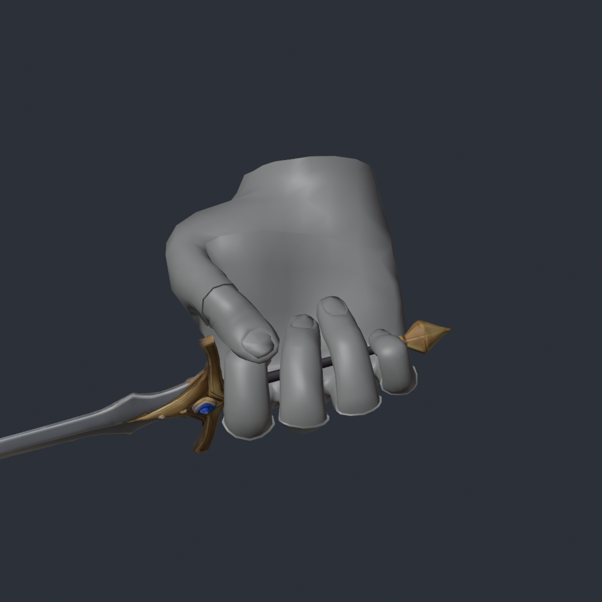
그림을 불러오는 중입니다.엄지의 검지 지지와 손가락·손바닥의 손잡이 지지를 나누어 확인합니다.
엄지 쪽 · 방향 수정
그립 FAIL
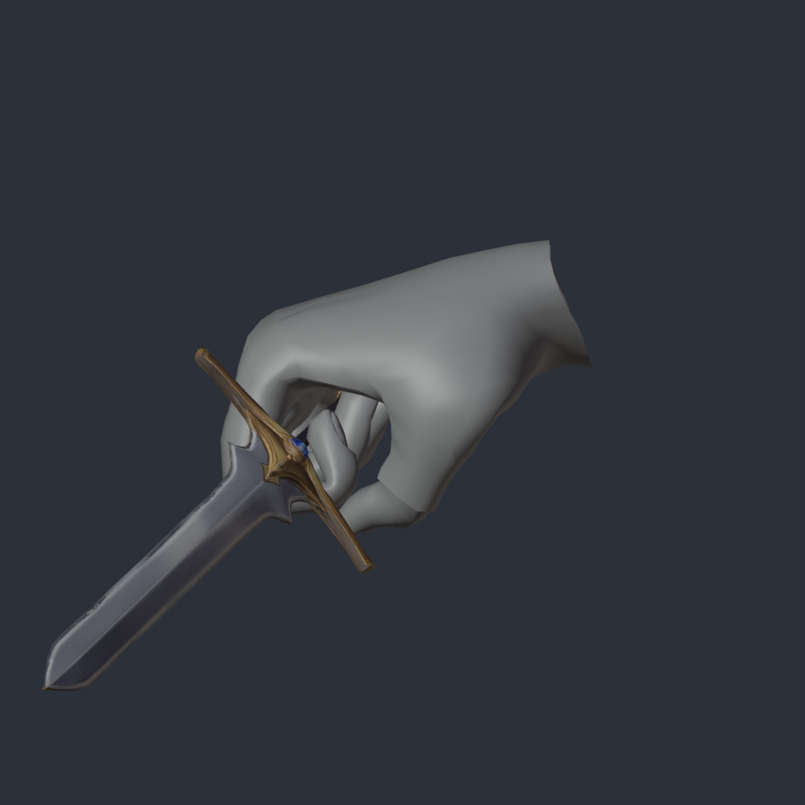
그림을 불러오는 중입니다.검의 칼끝 방향을 바꾸고 엄지를 검지 바깥으로 옮겼습니다. 단단히 감싸 쥔 그립은 아직 검수 중입니다.
손가락 안쪽
각진 윤곽·경계 검수 중
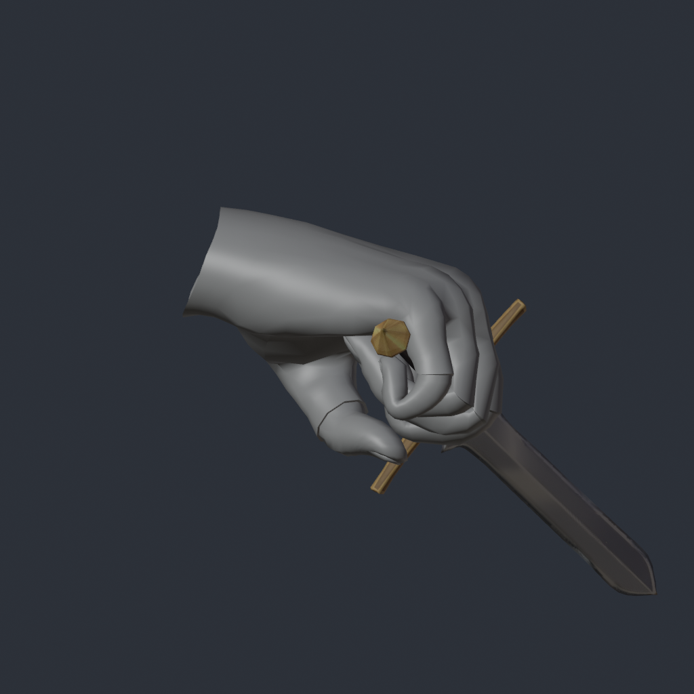
그림을 불러오는 중입니다.검은 선에는 원래 모델의 음영 경계도 섞여 있습니다. 실제 꺾임·굵기 변화와 나누어 검수합니다.
원래 몸·소매와 비교
손목 맞춤 FAIL
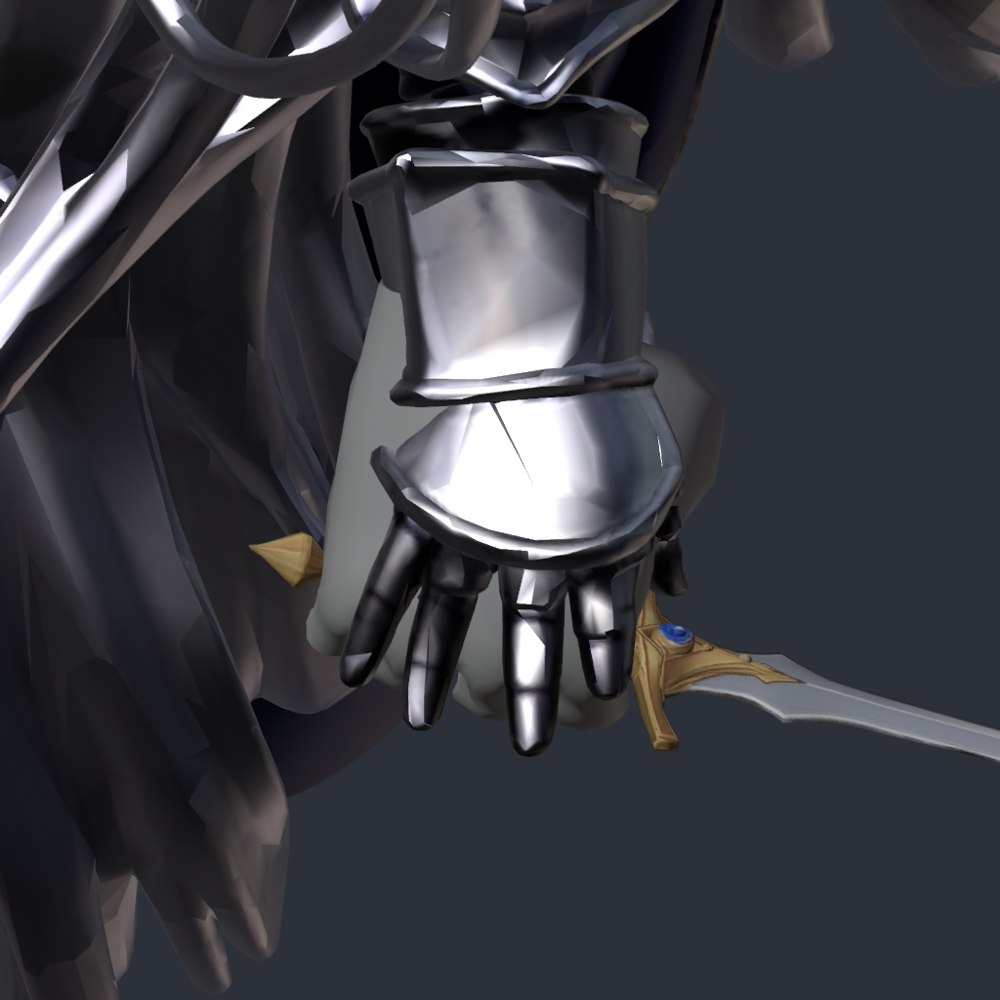
그림을 불러오는 중입니다.기존 손을 남긴 비교용 사본입니다. 손목 접합이나 자연스러운 가림이 완성됐다는 뜻은 아닙니다.
앞의 세 그림은 몸을 숨긴 보조 자료입니다. 자연스러운 가림이나 손목 접합을 통과했다는 뜻이 아닙니다. 그립 수정 뒤 검 부착·팔 자세·전체 동작을 검수하며, 어깨 변형도 별도로 해결해야 합니다.
6차 맞춤의 다른 4개 시점 보기


4차 맞춤의 이전 기록 8장 보기
관절 위치와 웨이트를 고친 4차 후보입니다. 느슨한 쥠·각진 마디·손목 미접합으로 미통과했습니다. 5차는 CPU 검사에서 변형이 악화되어 렌더하지 않았습니다.


3차 맞춤의 이전 기록 8장 보기
손가락 굽힘과 손목 축을 조정한 이전 후보입니다. 느슨한 쥠·관절 단차·소매 연결로 미통과했으며, 최신 후보와 구분해 보존합니다.


2차 맞춤의 이전 기록 8장 보기
손의 방향과 크기를 맞춘 이전 후보입니다. 손가락 내부 겹침·엄지 지지·손목 어긋남으로 미통과했으며, 아래 그림은 최신 후보와 다릅니다.


새 후보는 검수 렌더 8장으로만 공개하며 모델 파일은 배포하지 않습니다. 공개 손 모델·자세의 출처와 라이선스
보존 기록 · 공개 손 모델 · 1차 맞춤
이전 두 자세 비교
그립·부착 FAIL · 수정 중
공개 모델의 기존 두 자세를 릴리의 원본 검과 비교했습니다. 자세 변환은 확인했지만, 손잡이를 감싸는 위치와 손목·소매 연결은 아직 맞지 않습니다. 회색은 형상을 보기 위한 검사용 재질입니다.
자세 A · Grip
손과 검만 표시
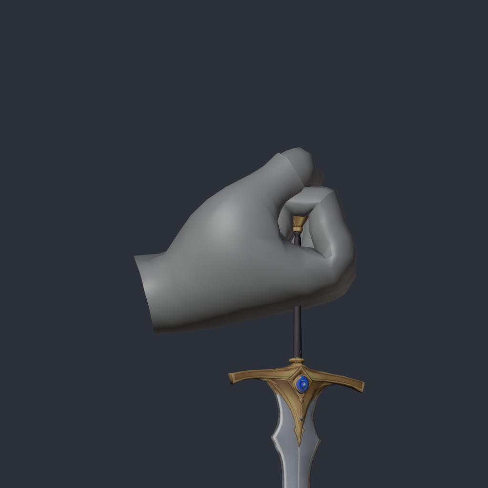
그림을 불러오는 중입니다.더 닫힌 자세입니다. 손잡이를 실제로 감싼 그립으로는 통과하지 못했습니다.
자세 B · Grip Shaft
손과 검만 표시
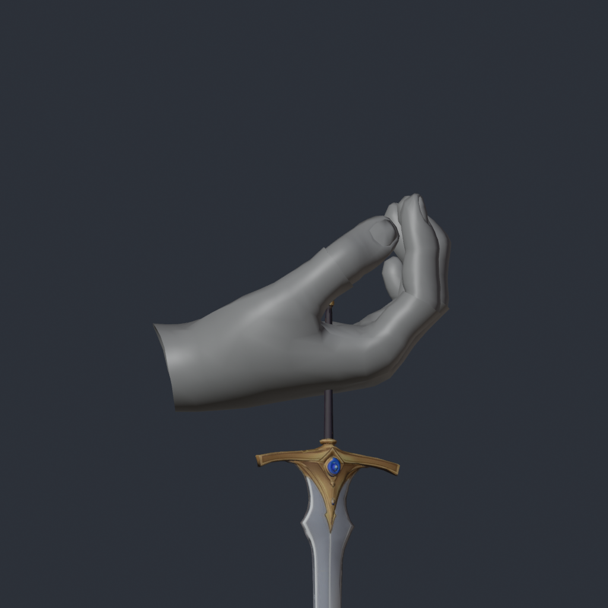
그림을 불러오는 중입니다.손가락 사이 공간과 검 끝 장식의 겹침이 남아 있습니다.
자세 A · 원래 몸 포함
검사용 겹쳐 보기
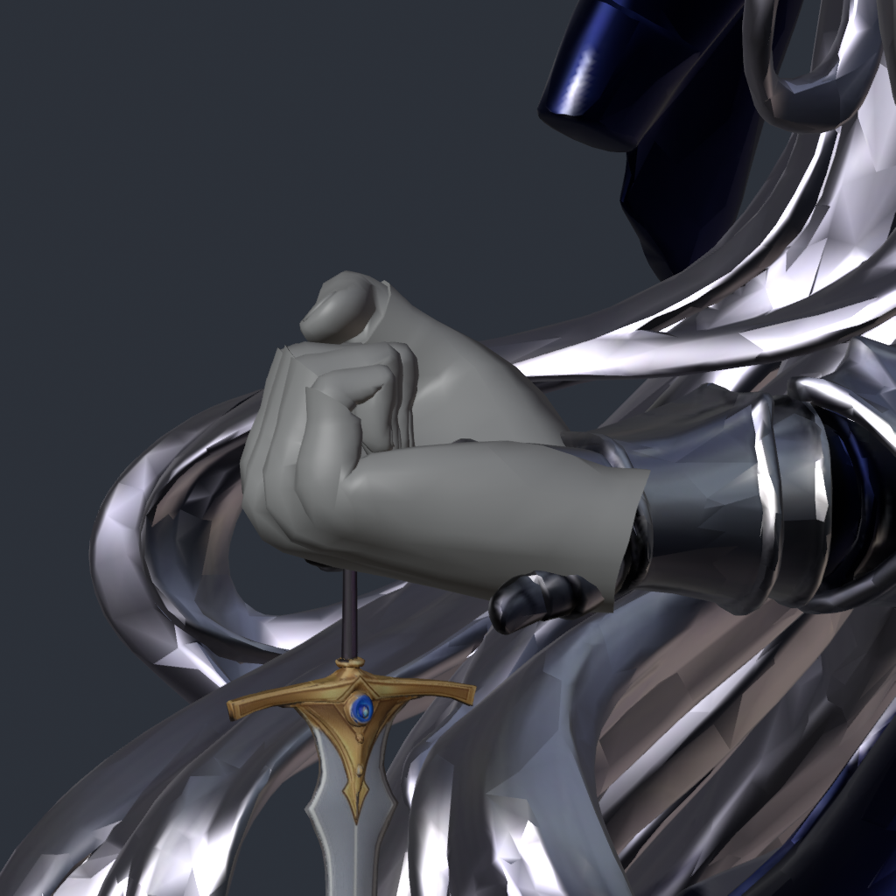
그림을 불러오는 중입니다.자세 B · 원래 몸 포함
검사용 겹쳐 보기
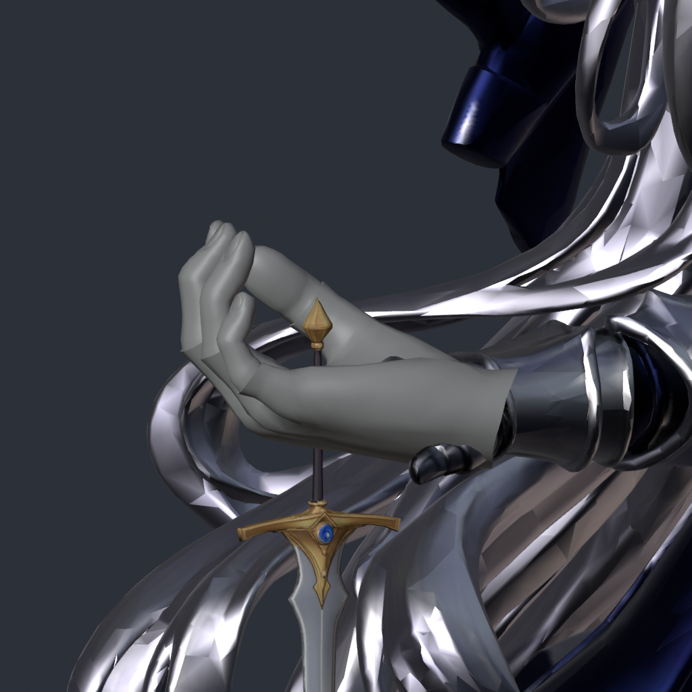
그림을 불러오는 중입니다.원래 손은 삭제하지 않았습니다. 몸을 숨긴 위 두 그림은 가림을 분리해 보는 보조 자료일 뿐, 완성된 부착이 아닙니다. 실제 그립을 먼저 맞춘 뒤 검의 위치·방향과 팔·손목 자세를 조정합니다. 어깨 변형과 전체 동작 검수도 남아 있습니다.
다른 12개 시점 보기
시점 A·B·C·D는 촬영 위치 구분입니다. 손바닥·손등 방향명은 확인 중입니다. 모두 1024 × 1024 원본 크기로 열립니다.


자세 B · Grip Shaft


손 모델: DigitalN8m4r3 / Miodrag Sejic, GodotVR 공개 손 자료의 모델 전용 CC0. 자세 자료: Godot XR Tools, Copyright (c) 2018–2023 Bastiaan Olij and Contributors, MIT. 이 페이지에는 모델 파일이 아닌 검수 렌더만 공개합니다.
보존 기록 · 중간 후보 rb_o3
이전 오른손 수정 기록
형상 FAIL · 파지·접촉 BLOCKED
손 형태를 수정하던 중간 후보의 기본 자세(REST)입니다. 동작 클립의 0프레임이나 완성된 그립이 아닙니다. 그림을 누르면 원본 크기로 볼 수 있습니다.
손바닥
형상 FAIL
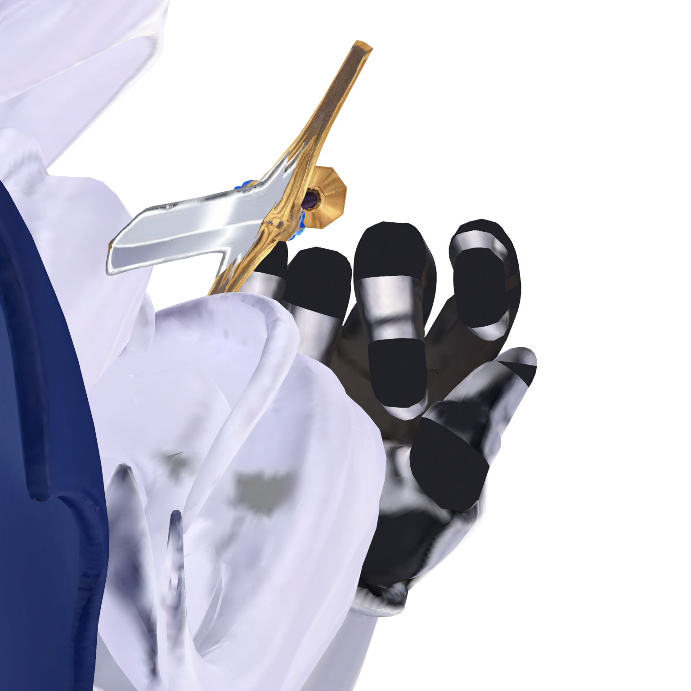
그림을 불러오는 중입니다.손가락 사이 틈과 검은 마디가 남아 있습니다. 형상 검수를 통과하지 못했습니다.
손등
형상 FAIL
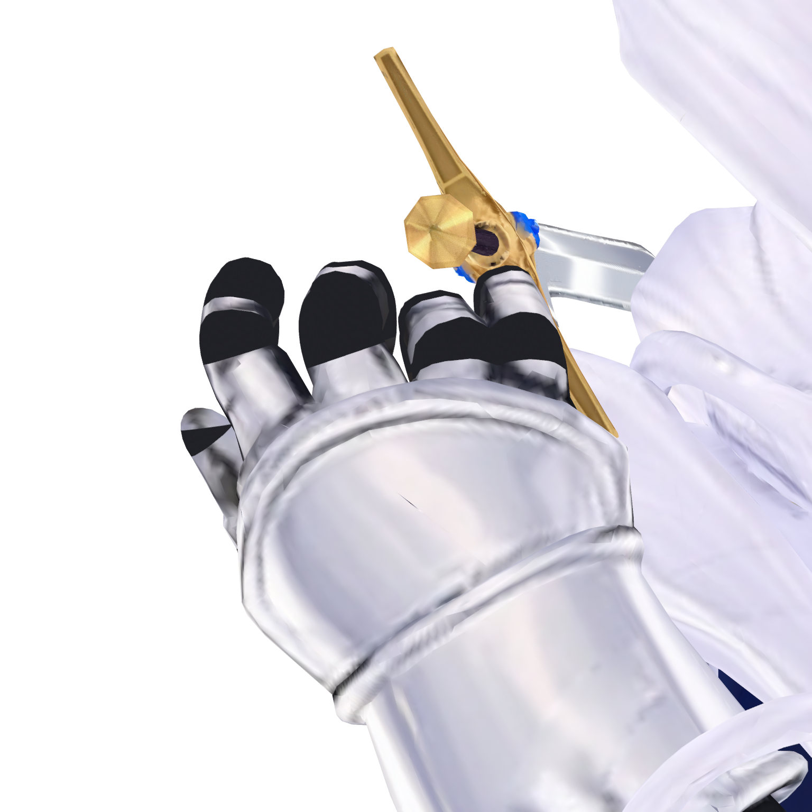
그림을 불러오는 중입니다.손가락별 어두운 띠와 분리가 남아 있습니다.
엄지와 대용 손잡이
접촉 BLOCKED
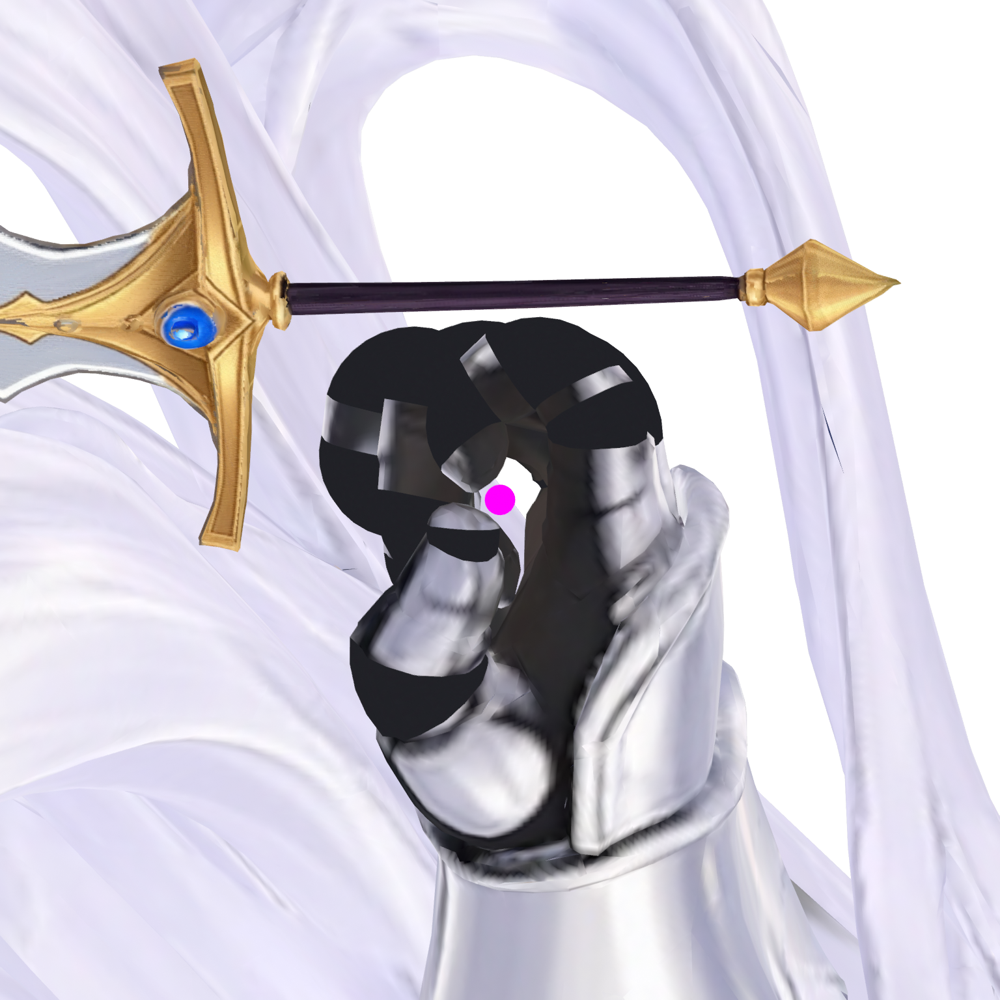
그림을 불러오는 중입니다.분홍색은 실제 검이 아닌 대용 원통입니다. 엄지와 0.504mm 틈이 있어 접촉을 입증하지 못했습니다.
새끼손가락 쪽
가림 BLOCKED
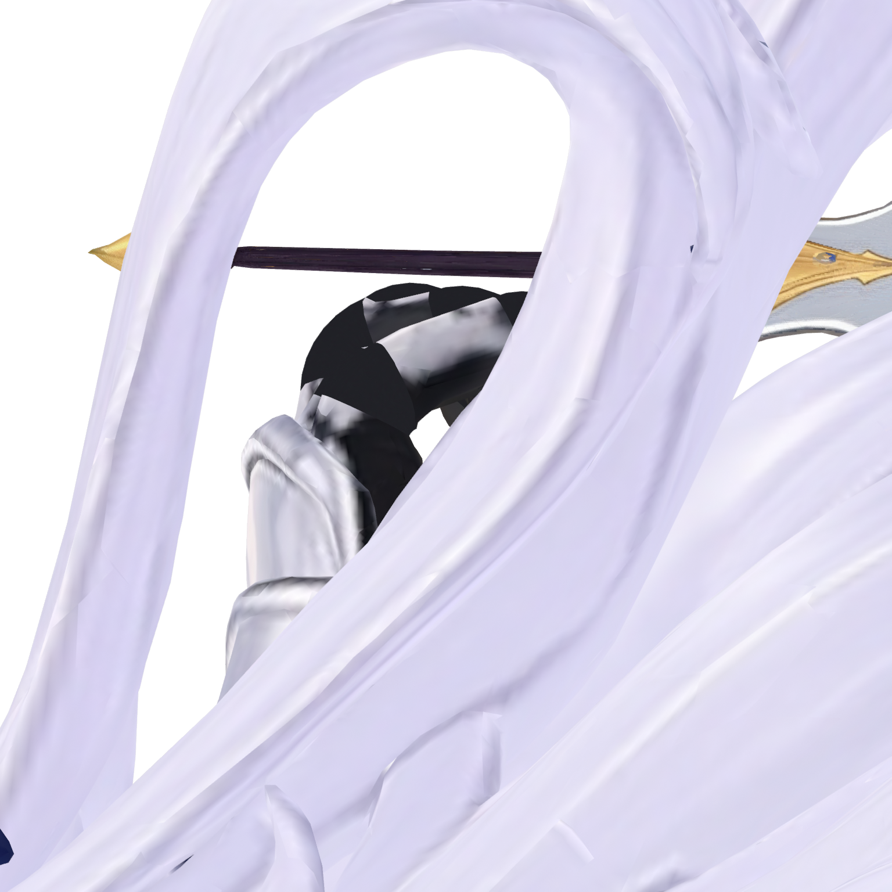
그림을 불러오는 중입니다.가리는 머리카락을 지우지 않은 실제 상태입니다. 이 시점에서는 파지를 확인하지 못했습니다.
자체 메시 제작의 후속 작업은 중단하고 원본과 검수 자료를 보존했습니다. 위 그림은 공개 모델을 활용한 새 후보나 R17의 개선 결과가 아닙니다. 손 검수 뒤 검 부착·동작·게임 반입도 별도로 확인해야 합니다.
수정 전후
머리카락에 가려지던 칼날
일부 시점에서 개선 확인
공격 동작의 같은 시점(22프레임)을 비교합니다. 머리·칼날 부분만 잘라 확대한 그림이며, 그림을 누르면 전체 자세를 볼 수 있습니다.
아직 공개된 비교 시점이 없습니다. 아래의 문제 부위와 원화는 확인하실 수 있습니다.
수정 전
공격 22 · 정면
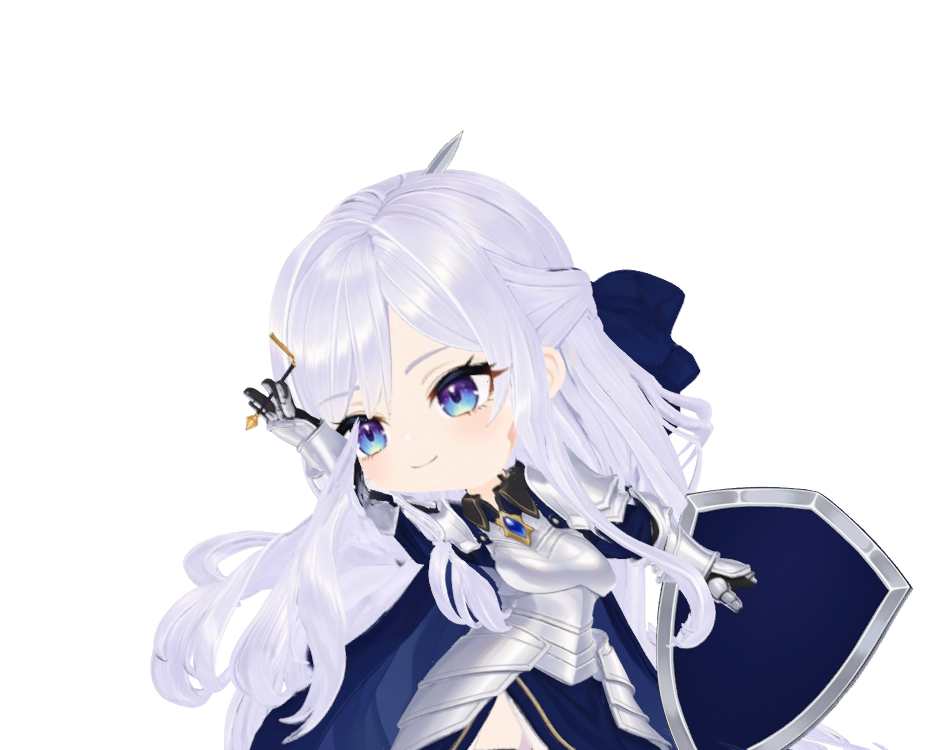
그림을 불러오는 중입니다.그림을 눌러 전체 자세 보기
수정 후
공격 22 · 정면
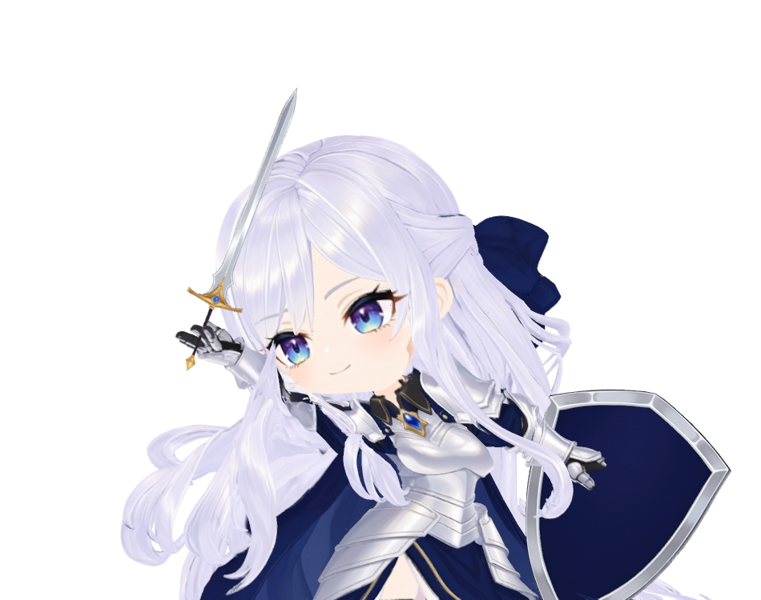
그림을 불러오는 중입니다.그림을 눌러 전체 자세 보기
칼날 경로를 조정한 뒤 정면에서 칼날이 이어져 보입니다. 뒤쪽에서 머리카락에 일부 가려지는 것은 남아 있으며, 이 비교만으로 전체 동작의 교차·변형 문제가 해결됐다고 판단하지는 않습니다.
남은 문제 · 어깨
접히는 어깨 보호대
승리 동작에서 왼쪽 어깨 보호대가 접히며 검은 안쪽 면이 드러납니다. 칼날 수정과는 별개의 문제입니다.
승리 43프레임 · 옆 · 부분 확대
칼날 수정본에서도 이 부위는 변경되지 않았습니다.

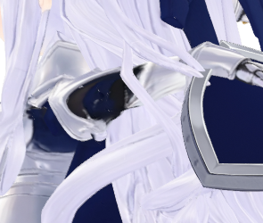
그림을 불러오는 중입니다.남은 문제 · 오른손
손잡이를 감싸지 않는 손
검은 손을 따라 움직이지만 손가락이 펴져 있어, 손잡이를 제대로 쥔 모습이 아닙니다. 손 형태를 별도로 고쳐야 합니다.
공격 13프레임 · 옆 · 부분 확대
칼날 수정본에서도 이 부위는 변경되지 않았습니다.

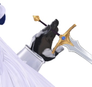
그림을 불러오는 중입니다.